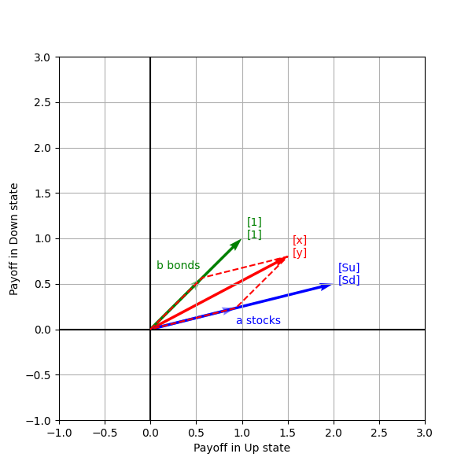
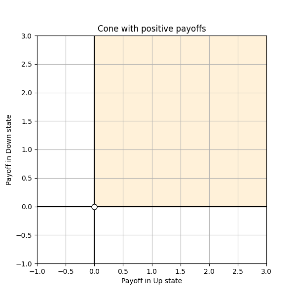
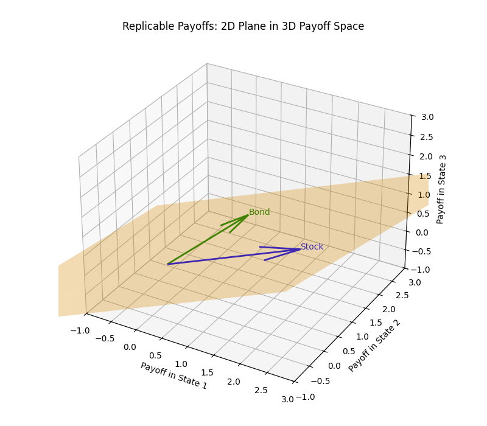

This post explains the two Fundamental Theorems of Asset Pricing using geometry and linear algebra, avoiding probabilistic machinery. The exposition is fully self-contained, with all necessary concepts introduced along the way.
Setting the Stage
Market Setup
We consider a one-period binomial market with a stock and a risk-free bond as traded assets. The stock has current price $S_0$ and, at the next time step, can move to one of two states—Up or Down. The bond is risk-free with interest rate $R_f$ and pays 1 in either state.
We allow trading in any derivative written on the stock. The market is idealized: there are no transaction costs and no restrictions on buying, selling, or shorting assets, including fractional positions.
Traded Assets in Payoff Space

With this market setup, each traded asset can be represented as a vector in a 2D plane, with each axis corresponding to the payoff in a future state. E.g., the payoff from holding one share of stock is given by the vector $[S_u, S_d]^T$, where $S_u$ and $S_d$ are the stock prices in the Up and Down states, respectively. Similarly, one unit of the risk-free bond has the payoff $[1, 1]^T$.
More generally, a portfolio consisting of $a$ units of the stock and $b$ units of the bond has payoff given by:
$$\begin{bmatrix} x \\ y \end{bmatrix} = a \begin{bmatrix} S_u \\ S_d \end{bmatrix} + b \begin{bmatrix} 1 \\ 1 \end{bmatrix}$$A key point to note is that, as long as $S_u \neq S_d$, any payoff vector can be replicated using a portfolio of the stock and the bond. In linear algebraic terms, the corresponding payoff vectors span the entire 2D payoff space.
The Price Operator
We denote by $\mathcal{P}(.)$ the price operator, which assigns a time 0 price to each payoff vector. The market fixes the values of the price operator on the payoff vectors corresponding to traded assets. In particular, the stock and bond prices satisfy:
$$S_0 = \mathcal{P}\!\left(\begin{bmatrix} S_u \\ S_d \end{bmatrix}\right); \quad B_0 = \mathcal{P}\!\left(\begin{bmatrix} 1 \\ 1 \end{bmatrix}\right)$$While the price operator is defined on the entire 2D payoff space, we have not yet discussed how the prices of general stock–bond portfolios are determined.
First Fundamental Theorem of Asset Pricing
Theorem Statement
No Arbitrage as a Geometric Constraint
An arbitrage is a payoff that:
- is non-negative in every future state and strictly positive in at least one—that is, it never loses and sometimes gains;
- has zero or negative price today—meaning it costs nothing (or less) to acquire.
Such payoffs form a positive cone: the set of vectors whose coordinates are all non-negative.

The absence of arbitrage imposes a geometric restriction on the price operator $\mathcal{P}(.)$. Specifically, it must assign a strictly positive price to every strictly positive payoff vector, i.e.:
$$\mathcal{P}\!\left(\begin{bmatrix} x \\ y \end{bmatrix}\right) > 0, \quad \text{for all } \begin{bmatrix} x \\ y \end{bmatrix} \in \mathbb{R}^2_+ \setminus \{\mathbf{0}\}$$If the above condition is not satisfied, one could obtain a non-negative payoff at no cost—or even a gain—thereby creating an arbitrage.
Linearity of the Price Operator
A risk-neutral pricing measure is defined as a probability measure under which time 0 prices are given by discounted expectations of future payoffs. If such a measure exists, then the price operator coincides with a discounted expectation.
In the single-period setting considered here, the discount factor is a constant. Since expectation is a linear operation, this immediately implies that the price operator must be linear. Consequently, for any payoff vector $[x, y]^T$, the price operator satisfies:
$$\mathcal{P}\!\left(\begin{bmatrix} x \\ y \end{bmatrix}\right) = x \cdot \mathcal{P}\!\left(\begin{bmatrix} 1 \\ 0 \end{bmatrix}\right) + y \cdot \mathcal{P}\!\left(\begin{bmatrix} 0 \\ 1 \end{bmatrix}\right)$$Proof Sketch
No arbitrage $\Rightarrow$ Existence of risk-neutral measure
From the no arbitrage constraint, we know that:
$$\mathcal{P}\!\left(\begin{bmatrix} 0 \\ 1 \end{bmatrix}\right) > 0 \quad \text{and} \quad \mathcal{P}\!\left(\begin{bmatrix} 1 \\ 0 \end{bmatrix}\right) > 0$$We also know that the bond price at time 0 is given by:
$$B_0 = \mathcal{P}\!\left(\begin{bmatrix} 1 \\ 1 \end{bmatrix}\right) = \mathcal{P}\!\left(\begin{bmatrix} 0 \\ 1 \end{bmatrix}\right) + \mathcal{P}\!\left(\begin{bmatrix} 1 \\ 0 \end{bmatrix}\right)$$This allows us to define the risk-neutral probabilities of the two future states as:
$$q_u = \frac{\mathcal{P}\!\left(\begin{bmatrix} 1 \\ 0 \end{bmatrix}\right)}{B_0}, \qquad q_d = \frac{\mathcal{P}\!\left(\begin{bmatrix} 0 \\ 1 \end{bmatrix}\right)}{B_0}$$Since $B_0$ is the constant discount factor in the single-period setting, prices can be written as discounted expectations under $(q_u, q_d)$. This establishes the existence of a risk-neutral pricing measure.
Existence of risk-neutral measure $\Rightarrow$ No arbitrage
Similarly, if a risk-neutral measure exists, then $\mathcal{P}([1, 0]^T)$ and $\mathcal{P}([0, 1]^T)$ must be proportional to the probabilities of the corresponding future states. Since any payoff vector in the positive quadrant can be written as a non-negative linear combination of these state-contingent payoffs, its price must be strictly positive. Arbitrage is therefore ruled out.
Second Fundamental Theorem of Asset Pricing
Theorem Statement
Completeness of a Market
To illustrate market completeness, we slightly modify the setup. Instead of two future states, suppose there are three possible states, each with non-zero probability, while the stock and bond remain the only traded assets.

Payoffs are now vectors in a 3D payoff space. The stock and bond correspond to two such vectors, and portfolios formed from them span a 2D plane within this space (shown above).
Since the payoff space is 3D but traded assets span only a plane, there exist payoffs that cannot be replicated using any stock–bond portfolio. This failure of replication is precisely what is meant by market incompleteness. To remove this indeterminacy, the market must reveal the price of an additional asset, with a payoff that does not lie on this plane, thereby fixing the remaining degree of freedom.
Proof Sketch
The First Fundamental Theorem of Asset Pricing continues to hold even in an incomplete market, as long as there is no arbitrage. In this case, however, no-arbitrage guarantees only the existence of a risk-neutral pricing measure, not its uniqueness. There remains at least one degree of freedom in choosing the state probabilities.
In an incomplete market, traded assets span only a proper subspace of the payoff space. While no-arbitrage restricts admissible risk-neutral measures to those consistent with observed asset prices, it does not determine prices of payoffs lying outside the replicable subspace. This freedom results in multiple risk-neutral pricing measures that all satisfy no-arbitrage.
By contrast, in a complete market, every payoff vector can be replicated using traded assets. The pricing argument from the First FTAP then applies to the entire payoff space: observed market prices uniquely determine the price operator, leaving no freedom in the choice of state probabilities. Hence, the risk-neutral pricing measure is unique, establishing the equivalence.
Final Note
The one-period binomial market setup adopted here abstracts away from many real-world complications, but it clarifies the core ideas underlying modern asset pricing and (hopefully) provides a useful lens for understanding more general models.
One aspect of this framework that remains somewhat unsatisfying to me is the linearity of the price operator. In practice, effects such as liquidity constraints, market impact, and transaction costs lead to inherently non-linear pricing. It would be interesting to explore how the geometric picture developed here extends—or breaks down—once such effects are incorporated, though I am not yet familiar with the relevant literature in this direction.